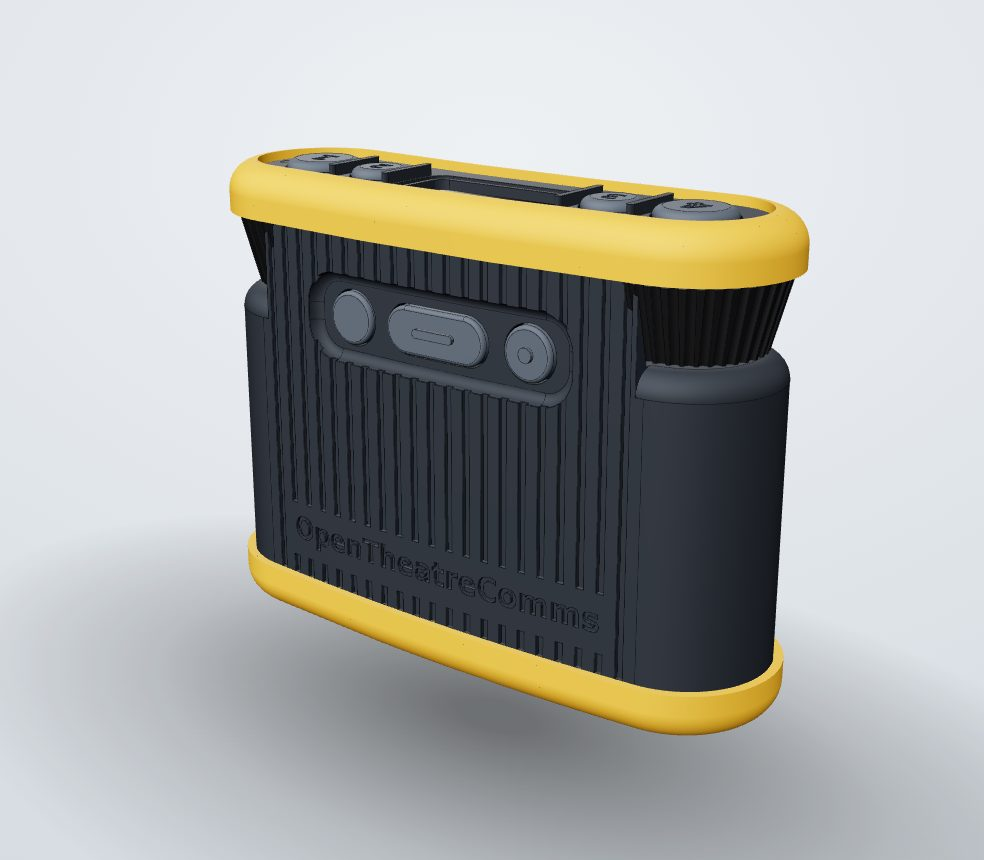
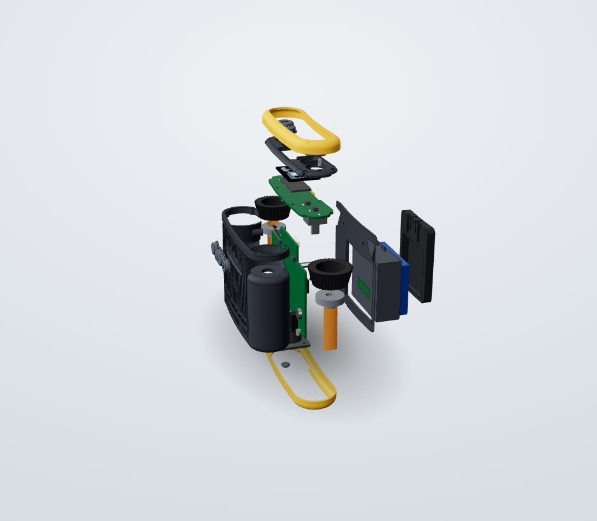
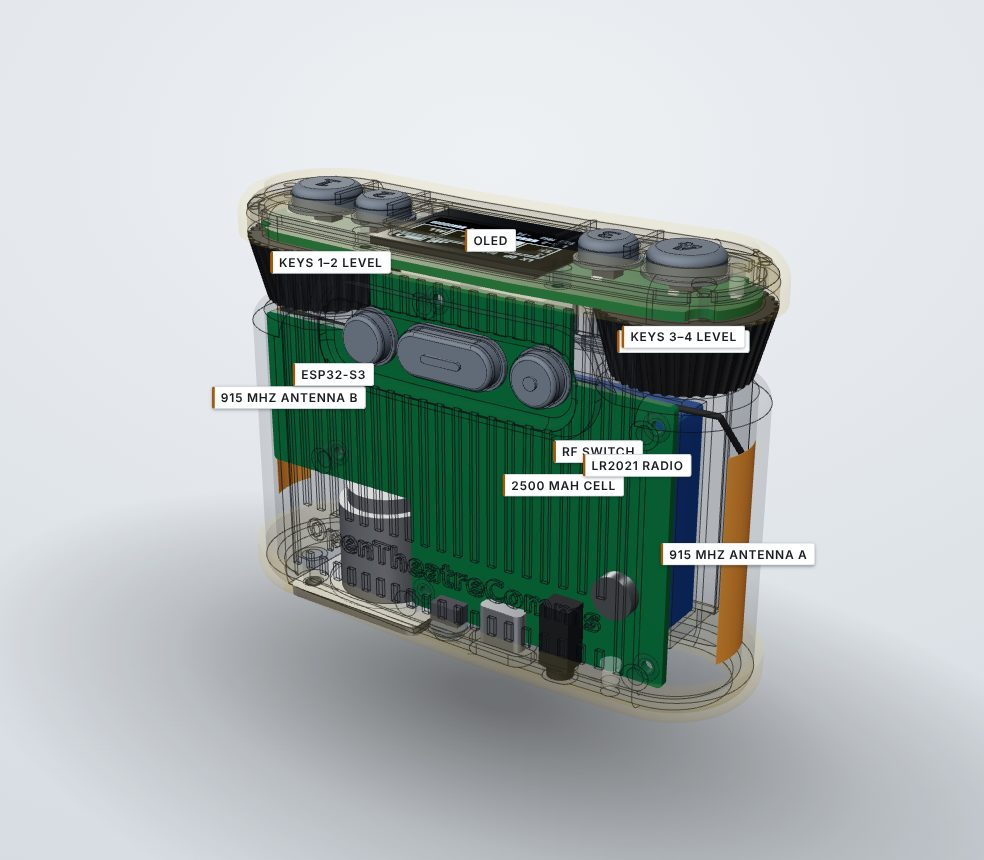
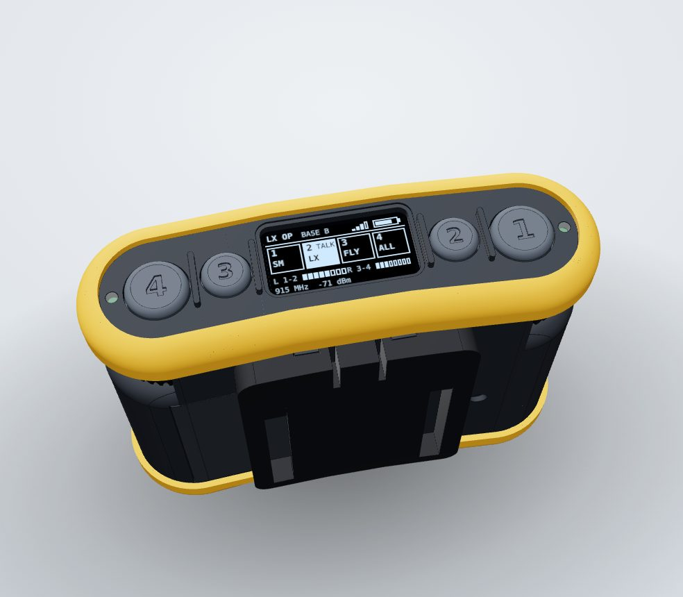

OpenTheatreComms Beltpack
An open, DIY full-duplex wireless theatre intercom beltpack, 3D printed and hand-assembled.
Reference design · pre-layout
- Radio
- LR2021, 915–928 MHz (Australia)
- MCU
- ESP32-S3
- CAD
- CadQuery, KiCad
- Size
- 105 × 77 × 30 mm shell
What it is
A DIY full-duplex wireless theatre intercom beltpack in the spirit of the Hollyland Solidcom M1 and Clear-Com FreeSpeak II. It uses an ESP32-S3 with an LR2021 radio on 915–928 MHz (Australia) and talks to PoE base stations over a 20 ms TDMA frame.

The pack
| Size | 105 × 77 × 30 mm shell (108 × 81 × 35 mm with the TPU caps, 39 mm deep with the belt plate). The back follows a 400 mm radius to sit on the hip. |
| Controls | Four talk keys and a 1.3 in OLED on the flat top, a detented dial at each round end, Back / Function / Menu in a recessed panel on the front |
| Bottom | XLR-4 male (D-type), power button, USB-C, 3.5 mm TRRS, flashlight |
| Power | A 104050 Li-ion pack (2500 mAh) forms the back of the case; the belt plate slides up its rails and locks it in |
| Boards | A curved top PCB (99.8 × 26.5 mm) carrying the OLED and both encoders, and a vertical main PCB (87.5 × 64.5 mm) carrying the MCU, radio, codec, power and connectors, linked by a 10-way JST SH cable |
| Radio | Elecrow LR2021 module with switched antenna diversity: a pSemi PE4259 picks between two flex antennas, one in each round end, every frame |
Renders



Rebuilding the model
The whole beltpack is a parametric CadQuery model: shells, TPU caps, dials, keys, both PCBs and every bought part as a datasheet envelope. A clash checker runs a pairwise interference test across all 71 parts.
cd cad
python3 final_bp.py # model, STEP, GLB, STLs
python3 clash.py # interference check: expect "CLASHES: 0"
python3 export_boards.py # DXFs and drawings for KiCad
python3 build_viewer.py # interactive three.js viewerThe repo also ships every printed part as STL, the full assembly as STEP, ready-to-open KiCad projects for the three boards, and an interactive 3D viewer.
Status
This is a reference model to start KiCad layout, not a released design. A few part envelopes are typical sizes still to be checked against the exact parts you buy (rotary encoder body height, XLR flange and depth, USB connector, tact switch variants, JST SH bodies and the OLED active area).
Documentation
Full documentation, rendered from the repository.